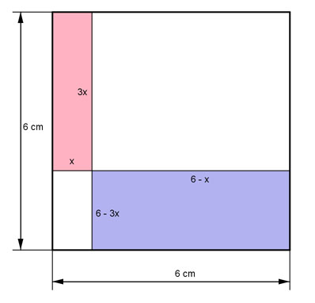

Aufgabe 133
Die Höhe des roten Rechtecks ist dreimal
so groß wie seine Breite. Für welche Höhe
ist die Gesamtfläche der eingefärbten
Rechtecke am kleinsten?

Rote Fläche:
Eine Seite sei x, dann ist die andere 3x.
Arot = x * 3x
Blaue Fläche:
Ablau = (6 - x)(6 - 3x) = 36 - 24x + 3x2
Gesamtfläche A = Arot + Ablau
A(x) = 3x2 + 36 - 24x + 3x2
A(x) = 6x2 - 24x + 36
Dies ist die Funktionsgleichung einer nach
oben geöffneten, gestreckten Parabel, deren
tiefster Punkt der Scheitelpunkt ist.
A(x) = 6x2 - 24x + 36 |:6
A(x)
------ = x2 - 4x + 6
6
Quadratische Ergänzung:
A(x)
------ = x2 - 4x + 4 - 4 + 6 mit x2 - 4x + 4 = (x - 2)2
6
A(x)
------ = (x - 2)2 + 2 |*5
6
A(x) = 6(x - 2)2 + 12
Scheitelpunkt abgelesen:
S(2|12)
Die Scheitelpunktkoordinaten bedeuten:
Wird die Länge x = 2 cm gewählt, dann
entsteht die größte Fläche A = 12 cm².
Die Höhe der roten Fläche ist 3*x = 3*2 cm = 6 cm.
Die blaue Fläche verschwindet.